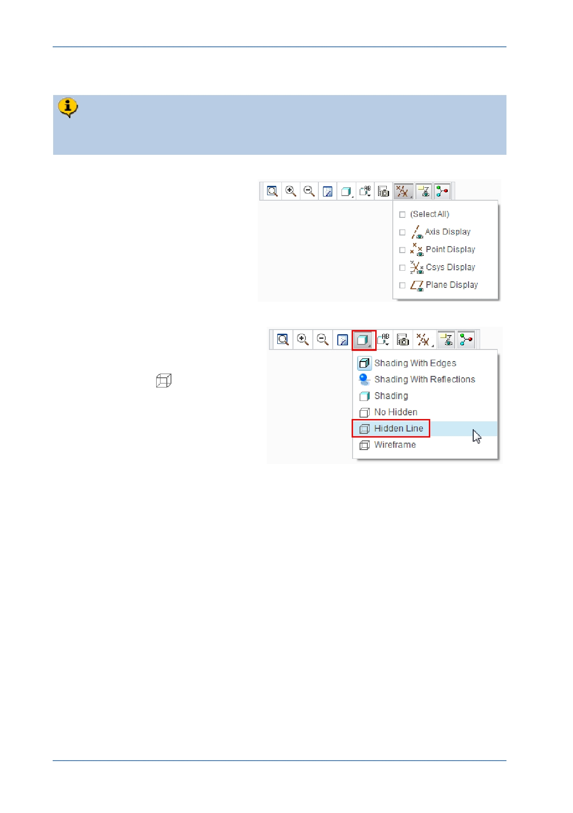

PTC Academic Program
Step 8: Round edges of the cube
The Round feature is a n “engineering” type feature applied to edges of a model.
You will now add a 5 mm radius round to the twelve outside edges of the cube.
1. Press CTRL + D to reorient the
model.
2. If necessary, disable the display
of all datum features.
3. Edit the model display style to be
Hidden Line:
In the Graphics toolbar, select
Hidden Line
from the
Display Style drop-down menu.
This display style will make it easier for
you to see edges at the back of the
model.
© 2012 PTC
Creo Parametric 2.0 Primer
Page 38